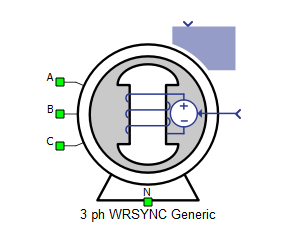

Three Phase Wound Rotor Synchronous Machine (Generic)
Description of the Three Phase Wound Rotor Synchronous Machine (Generic) component in Schematic Editor.
This simplified model of a three phase wound rotor synchronous machine allows simulation of machine dynamics in real time using only generic machine data such as power and voltage. It is built as an easy to use and implement, signal-processing-based component.

A, B, and C are the stator winding terminals. The stator winding uses the voltage behind reactance interface. The stator winding arrangement (connection) is considered to be star connected with an accessible neutral point.
In the simplified model of the machine, the rotor is assumed to be round and the field winding is assumed to be decoupled and operating independently. Meanwhile, the machine has only one damper winding in the q-axis which is short-circuited without accessible terminals.
Parameter estimation
To implement the the synchronous machine model, a set of basic parameters are estimated using the user provided general information regarding nominal operating conditions of the machine to be used in machine state space equations (which are explained in the next section). The estimated parameters are resistance and leakage inductance values for the stator, field winding and the single damper winding on q-axis, and dqmagnetizing inductances:
, ,
, ,
In the listed estimations, the stator resistances are chosen based on the projected stator copper losses (here 2% of machine nominal power). Rotor resistors are transformed to the stator side and are considered to be equal (q-axis damper) or close to the stator resistance (d-axis field) for improved transient stability. The magnetizing inductance is chosen based on the amount of machine flux at nominal condition versus the phase current amplitude (here, the 0.5 multiplier is to ensure a stability margin overdesign for a wider range of operating conditions around listed nominal values). The leakage inductances are chosen to be 1/12 of the estimated magnetizing inductance based on an average over a number of typical synchronous machine designs and to maintain fast damping time constants for both rotor windings and stator considering the estimated resistances.
In the listed estimations, , , and are the provided nominal line voltage of the machine, nominal apparent power, nominal active power and nominal electrical frequency of the machine from the component mask.
Electrical sub-system model
The electrical part of the machine is implemented based on a simplified voltage behind reactance model in which the rotor fluxes (i.e., field winding flux and q-axis damper winding flux) are chosen as state variables with stator currents and rotor field winding voltage serving as inputs to the system. Also, for the sake of simplicity, the field winding flux equation on the d-axis is decoupled from the stator current dynamics, represented by the following system of equations, modeled in the rotating dq reference frame:
The machine state space model expressed above is then transformed into a VBR formulation where a rotor state-space system is formed using rotor fluxes as state variables and is solved with stator currents and field voltage as inputs. The resulting solution is then represented as controlled voltage sources and equivalent inductances in both q- and d-axes and connected in series with the stator equivalent circuit in both axes. The stator is then interfaced directly to external circuits using the transformed mentioned voltage sources and an equivalent series RL branch. The interfacing resistance is equal to and the interfacing inductace is equal to where:
Also, for the mechanical system equations, the electromagnetic torque is calculated as:
where p is the number of pole pairs which is calculated using the provided nominal speed and nominal frequency from the component mask.
| Symbol | Description |
|---|---|
| vds | Direct axis component of the stator phase voltage [V] |
| vqs | Quadrature axis component of the stator phase voltage [V] |
| v0s | Zero Sequence component of the stator phase voltage [V] |
| vfd | Rotor field winding voltage, referred to the stator [V] |
| vkq | Quadrature axis rotor damper winding voltage, referred to the stator [V] |
| ids | Direct axis component of the stator phase current [A] |
| iqs | Quadrature axis component of the stator phase current [A] |
| i0s | Zero Sequence component of the stator phase current [A] |
| ifd | Rotor field winding current, referred to the stator [A] |
| ikq | Quadrature axis rotor damper winding current, referred to the stator [A] |
| ψds | Direct axis component of the stator flux [Wb] |
| ψqs | Quadrature axis component of the stator flux [Wb] |
| ψ0s | Zero Sequence component of the stator flux [Wb] |
| ψfd | Rotor field winding flux, referred to the stator [Wb] |
| ψkq | Quadrature axis rotor damper winding flux, referred to the stator [Wb] |
| Rs | Stator phase resistance [Ω] |
| Rfd | Rotor field winding resistance, referred to the stator [Ω] |
| Rkq | Quadrature axis rotor damper winding resistance, referred to the stator [Ω] |
| Lls | Stator phase leakage inductance [H] |
| Lmd | Direct axis magnetizing (mutual, main) inductance [H] |
| Lmq | Quadrature axis magnetizing (mutual, main) inductance [H] |
| Llfd | Direct axis rotor field winding leakage inductance, referred to the stator [H] |
| Llkq | Quadrature axis rotor damper winding leakage inductance, referred to the stator [H] |
| L''md | Direct axis sub-transient inductance [H] |
| ωr | Rotor electrical speed [rad/s] ( ) |
| p | Machine number of pole pairs |
| Te | Machine developed electromagnetic torque [Nm] |
Mechanical sub-system model
Motion equation:
| Symbol | Description |
|---|---|
| ωm | Rotor mechanical speed [rad/s] |
| Jm | Combined rotor and load moment of inertia [kgm2] |
| Te | Machine developed electromagnetic torque [Nm] |
| Tl | Shaft mechanical load torque [Nm] |
| θm | Rotor mechanical angle [rad] |
Ports
- A (electrical)
- Stator winding phase A port.
- B (electrical)
- Stator winding phase B port.
- C (electrical)
- Stator winding phase C port.
-
N (electrical)
- Neutral point of star (Y) connected stator winding.
- in
- Rotor speed - if Mechanical Input is set to speed.
- Rotor torque - if Mechanical Input is set to torque.
- Vfd
- Rotor field winding voltage. [V]
Electrical (Tab)
-
Nominal machine line to line voltage
- Nominal line voltage at the machine stator terminals. [V]
-
Nominal apparent power
- Nominal apparent power at the machine stator terminals. [VA]
-
Nominal active power
- Nominal active power at the machine stator terminals. [W]
-
Nominal frequency
- Nominal electrical frequency of the stator. [Hz]
-
Nominal revolutions per minute
- Nominal mechanical speed of the rotor. [RPM]
Mechanical (Tab)
-
Inertia
- Total rotational inertia attached to the machine rotor, including the rotor itself - additional load inertia should be included in this value. [kgm2]
-
Initial rotor angle
- Initial mechanical angle of the rotor (ar axis with respect to as axis). [deg]
-
Mechanical input
- Type of mechanical input to the machine, consisting of mechanical torque [Nm] or mechanical speed. [rad/s]
Output (Tab)
This block tab enables a single, vectorized signal output from the machine. The output vector contains selected machine mechanical and/or electrical variables in the same order as listed in this tab.
- Stator phase A current
- Stator phase A current [A]
- Stator phase B current
- Stator phase B current [A]
- Stator phase C current
- Stator phase C current [A]
- Electrical torque
- Machine electrical torque [Nm]
- Mechanical speed
- Machine mechanical angular speed [rad/s]
- Mechanical angle
- Machine mechanical angle [rad]
Execution rate (Tab)
The signal processing execution rate of the component is specified here. For more information on how execution rates are handled, please refer to our Execution rates documentation.
- Execution rate
- Signal processing output execution rate [s]
Extras (Tab)
The Extras tab gives you the opportunity to set Signal Access Management for the component.
- Public - Components marked as public expose their signals on all levels.
- Protected - Components marked as protected will hide their signals to components outside of their first locked parent component.
- Inherit - Components marked as inherit will take the nearest parent 'signal_access' property value that is set to a value other than inherit.